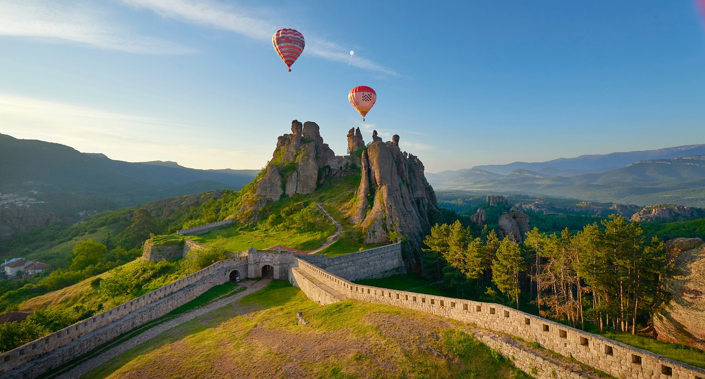
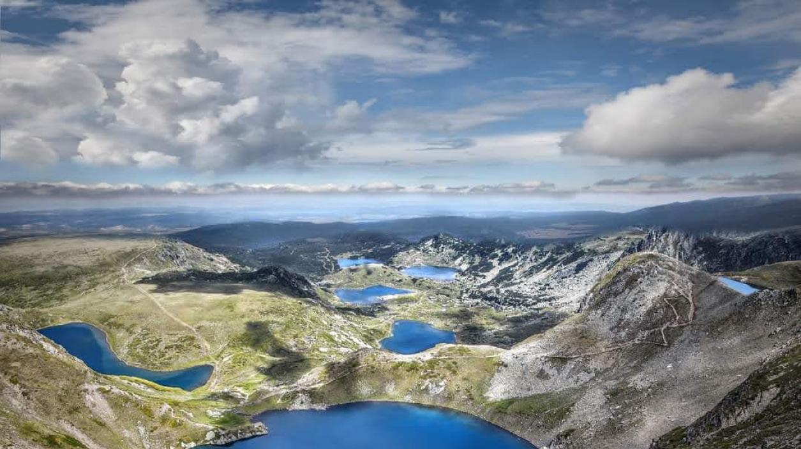
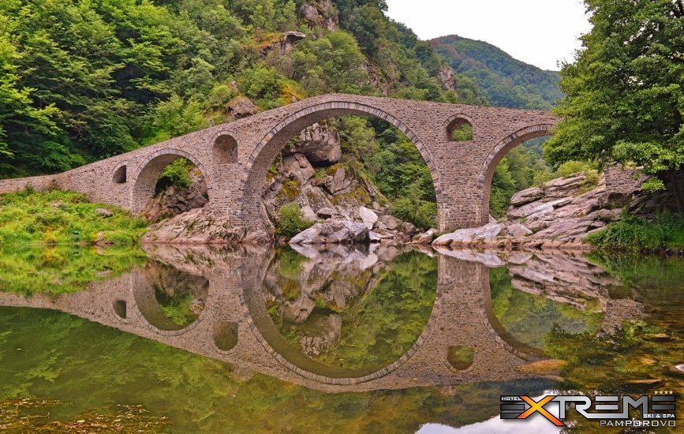
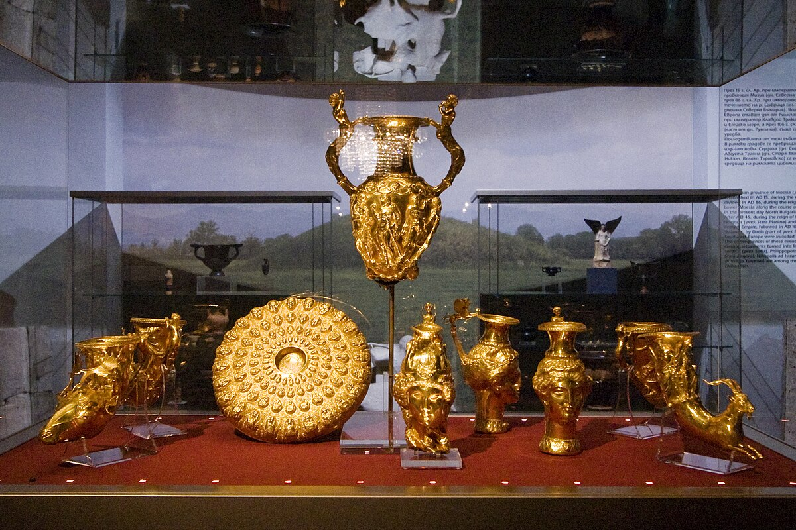

Забележителностите на България – магията на природата и историята в едно.
0+
Тракийските гробници и съкровища
0+
Обекта включени в списъка на ЮНЕСКО
0+
Исторически сгради, крепости и манастири
0+
Съдържат археологически останки от праисторически хора
Белоградчишките скали

Причудливите чудеса на Белоградчишките скали
Белоградчишките скали са уникално природно чудо в Северозападна България, близо до град Белоградчик. Огромни скални
образувания с причудливи форми и височина до 200 м създават впечатляващи пейзажи, които изглеждат почти нереални.
Легендите разказват за магически същества и герои, „заключени“ в камъка, а природата е оформила скалите така, че всяка
гледка разказва своя история. Мястото е съчетание от мистерия, красота и история, което привлича туристи, художници и
фотографи. Белоградчишките скали остават символ на величието и творческата сила на природата.
Седемте рилски езера

Ледниковото чудо на Седемте рилски езера
Седемте рилски езера са природно чудо, разположено високо в Рила планина, всяко едно на различна надморска височина. Те
са ледникови езера, свързани чрез потоци и каскади, а най-голямото – „Окото“ – отразява небето като огледало. Легендите
разказват, че езерата пазят тайни на планината и носят късмет на тези, които ги посетят. Мястото впечатлява с чистота,
спокойствие и величествена красота, съчетавайки природа и магия. Седемте рилски езера са символ на мистерията и силата
на Рила.
Дяволският мост

Мостът, който води към Ада
Дяволският мост над река Арда в Родопите е построен през 16 век и впечатлява със своята изящна арка и стабилна
конструкция. Според легендите, самият дявол е помогнал за изграждането му, а първият човек, преминал по моста, трябвало
да плати с душата си. Вярва се, че всяка вечер мостът се превръща в портал към Ада, отваряйки път само за смелите.
Мястото съчетава архитектурно майсторство, история и тайнственост, което го прави популярна туристическа дестинация.
Дяволският мост остава символ на мистерията и легендите на Родопите.
Тракийските съкровища

Панагюрското тракийско съкровище
Тракийските съкровища на България са магически прозорци към древността, разкриващи богатството и уменията на тракийските
владетели. Панагюрското съкровище впечатлява с 9 златни съда с богове и животни, символ на церемониални ритуали.
Варненското съкровище е най-старото злато в света, открито в гробници на раннотракийската култура, на повече от 6 500
години. Рогозенското съкровище съдържа над 160 златни и сребърни съда с митологични мотиви, доказващи художественото
майсторство на древните хора. Тези съкровища са не само златни артефакти, а врати към мистерията и величието на
тракийската цивилизация.
Мадарски конник
Средновековният шедьовър – Мадарският конник
Мадарският конник е уникален скален релеф, издълбан в отвесна скала край село Мадара, Източна България, от VIII век. Той
изобразява конник с куче, стрелящ с копие по лъв, и е символ на могъществото на ранносредновековната българска държава.
Релефът е част от Списъка на световното културно наследство на ЮНЕСКО и се смята за шедьовър на средновековното
изкуство. Мястото съчетава история, мистерия и величие, впечатлявайки с точността и мащаба на изсечените изображения.
Мадарският конник остава емблематичен символ на България и нейната културна идентичност.